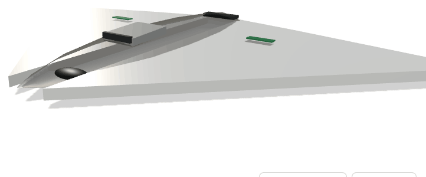
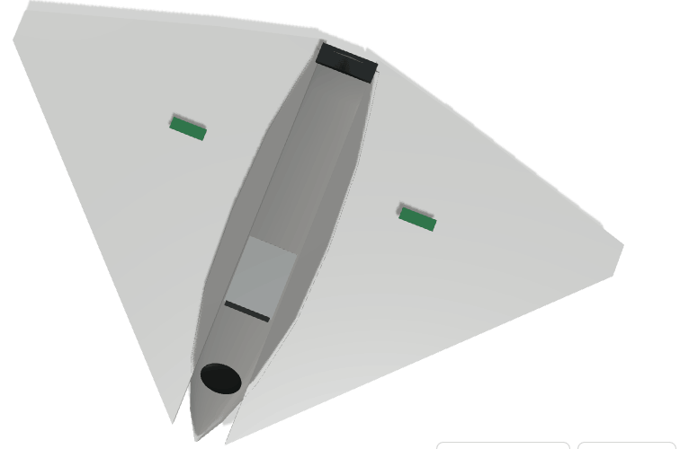
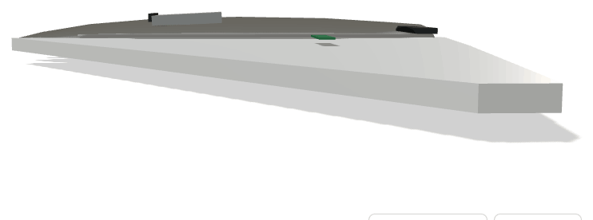
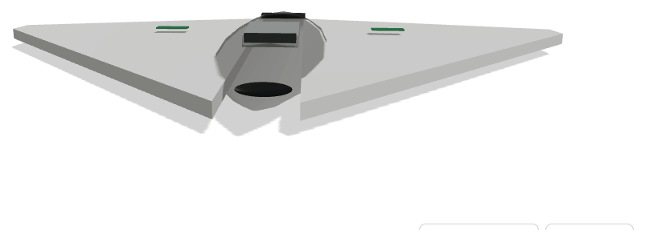
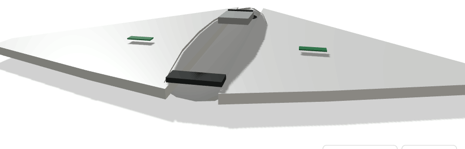

Plataforma aérea não tripulada de vigilância, reconhecimento e guerra electrónica, em configuração de ala voadora de baixa observabilidade. Desenho inspirado na arquitectura furtiva de asa voadora, adaptado a missões de penetração em espaço aéreo negado sem exposição de tripulação.




Cadastrar, vigiar e neutralizar electronicamente meios inimigos — radares, sistemas antiaéreos e comunicações — em espaço aéreo contestado, mantendo assinatura radar e térmica reduzida.
Baixa observabilidade por forma e materiais; ligação satélite de banda estreita; sensor de abertura sintética; suite de guerra electrónica com biblioteca de ameaças actualizável; autonomia com processamento a bordo para classificação de emissores.
Consciência situacional soberana sobre o território, o Atlântico e as áreas de interesse nacional, sem dependência de meios de terceiros. Cria competência nacional em materiais compostos furtivos, radar e software de guerra electrónica.
